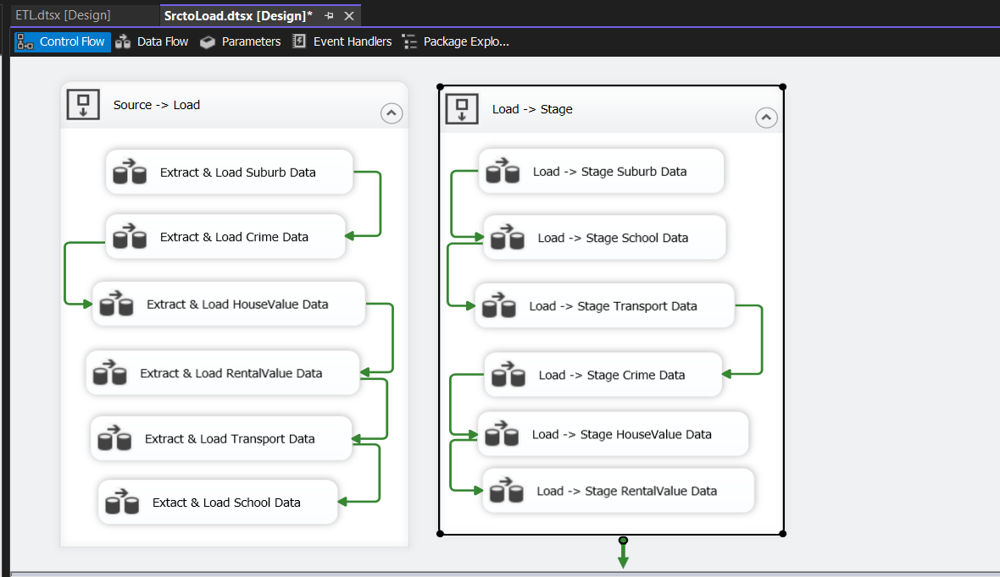

Property Analysis - Advanced Sprint 1
To design and implement a scalable ETL pipeline and dimensional data warehouse that supports location, property, rental, crime, and school data integration using best practices in data engineering and modeling.

End-to-End SSIS ETL Pipeline from raw source to Star schema.
Project Overview
- Developed a complete SSIS-based ETL solution to extract, transform, and load multi-source datasets into a Star Schema data warehouse, enabling structured, analytics-ready storage of property and public service data.
- Tools Used: SQL Server | SSIS | Visual Studio
- Techniques: ETL, Star Schema, Factless Fact Tables, Degenerate Dimensions, Data Warehousing
What I Did
- Extracted data from multiple Excel files into load_* and stage_* tables using SSIS.
- Applied business transformations with Derived Columns, Conditional Splits, and Lookups.
- Modeled a Star Schema with fact and factless fact tables.
- Composite primary key creation at staging level (State_code + Suburb) for uniqueness.
- Defined degenerate dimensions for fields like RentalHouseType, Offence Category, Offence Sub-Category, and derived value categories.
- Final cleaned data was loaded into Dim_* and Fact_* tables structured in a Star schema.
Tables Created
- Dimension tables:
DimSuburb,DimSchool,DimTransport - Factless Fact tables:
FactlessFact_School,FactlessFact_Transport - Fact tables:
FactCrime,FactHouseValue,FactRentalValue
Key Deliverables
- Complete multi-stage ETL pipeline from raw data to dimensional model.
- Structured raw data into a Star Schema model to support analytical reporting.
- Categorized House Value, Rental Value, and Crime Recorded Incidents data using Derived Columns.
- Integrated degenerate dimensions and factless fact tables for flexible querying.
- Clean, query-ready data warehouse prepared for BI consumption.